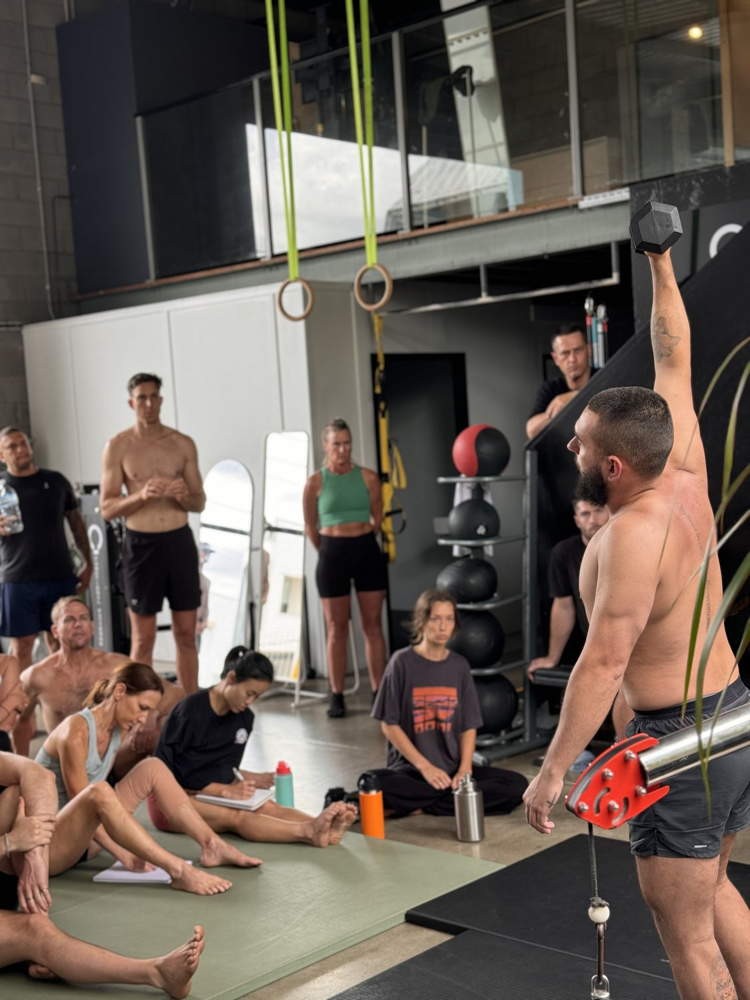
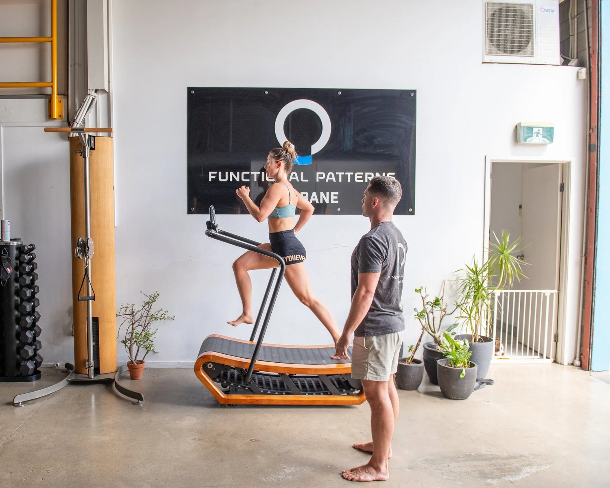
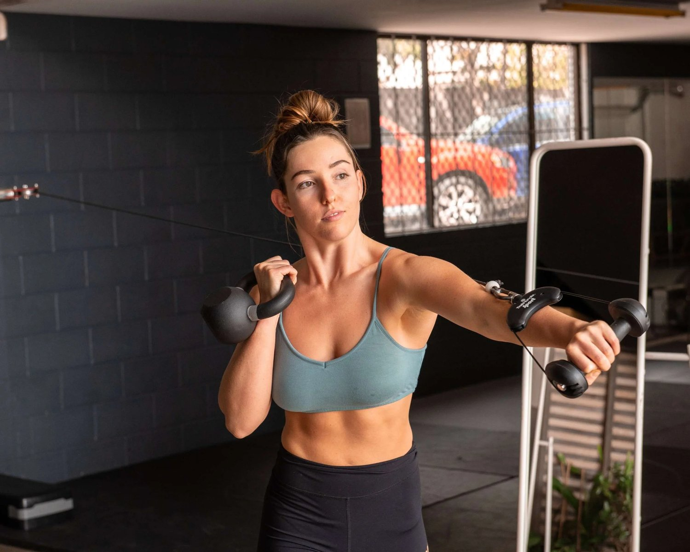
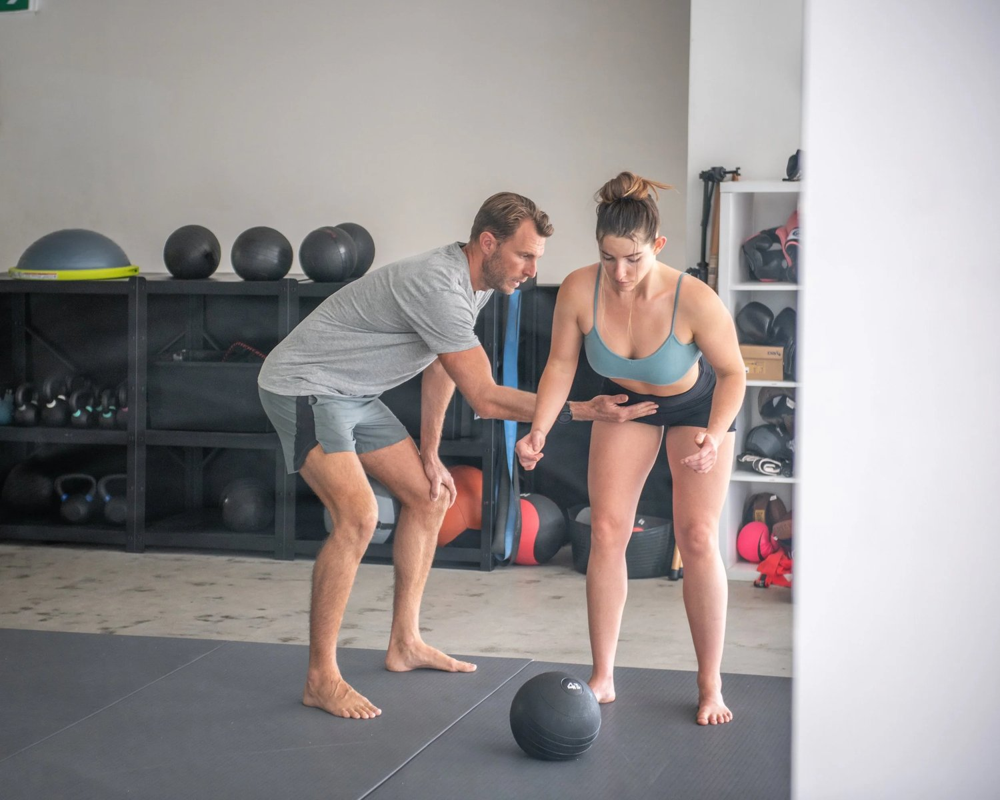

Disc Bulge Solution: Understanding the Real Cause Behind Your Pain
A long-term disc bulge solution requires more than pain relief — it requires correcting the dysfunctional movement patterns that caused the disc to compress in the first place. At Functional Patterns Brisbane, we frequently see people who have tried massage, stretching, traction, injections, or generic physiotherapy exercises, yet still struggle with bulged disc symptoms. This is because most mainstream treatments address the symptom (pain) rather than the mechanical forces that overloaded the disc.
A disc bulge typically forms when the spine lacks rotation, the pelvis becomes misaligned, the ribcage collapses, or the core remains chronically pressurised and bloated. These compensations increase compression at the lumbar spine, especially L4–L5 and L5–S1. The real disc bulge solution is to remove these compressive forces by improving gait, restoring thoracic extension, activating the glutes, and teaching the spine to decompress as you move.
Using the Functional Patterns method, we analyse how your body walks, rotates, and stabilises. By addressing these deeper mechanics, the disc is no longer being squashed — allowing your body to heal naturally and sustainably, without surgery or endless temporary fixes.
If you’re looking for a personalised disc bulge solution, you can book a posture assessment so we can analyse your gait and identify the exact movement patterns contributing to the disc compression.
Current Treatment Options For Bulged Discs

According to the American Association of Neurological Surgeons, these are the current options for bulged disc:
-
pelvic traction,
-
gentle massage,
-
ice and heat therapy,
-
ultrasound,
-
electrical muscle stimulation
-
and stretching exercises.
-
Pain medication
-
muscle relaxants in conjunction with physical therapy.
The issue with this list is that there is not one item listed that addresses the root cause. These prescriptions aim to relieve pain, but they fail to address what caused the pain in the first place.
Once you receive your bulging disc MRI, your primary goal should be to naturally heal for the long-term.
So, what causes a bulged disc?

Most medical articles claim the primary cause of bulging disks is aging or 'wear and tear.'
We see that 20-40 year olds regularly present at our chronic pain practice with bulged discs.
We believe that bulged discs are a result of poor movement patterns. We see that poor movement leads to poor posture and incorrect spinal loading. Overtime, this incorrect loading leads to excessive, chronic compression of the spine.
About 90% of bulging discs MRIs show that bulging occurs at L4-L5 and L5-S1. This causes pain in the L5 or S1 nerve that radiates down the sciatic nerve. This is area is the main site of postural compression in the spine.
Alongside poor movement patterns, most people we see are chronically bloated. This core bloating pushes the stomach out and leads to further compression of the lower spine.
When we put these factors together, it is easy to see why disc bulging is so prevent.
What Does a 'Dysfunctional Movement Pattern' Mean?

Your movement pattern, or biomechanics, is the way your body moves through space. When you move, your body interacts with itself, its environment and forces such as gravity.
A dysfunctional movement pattern is an unconscious or conscious movement that does not align with evolutionary standards. Evolutionary standards of movement include ratios that align with our physiology.
For example, there is a way to throw a ball that is less likely to injury you than another way.
Moreover, there is a way to throw a ball that creates more power than other throwing patterns.
Similarly, there is a way to walk and stand that is more efficient and less likely to cause injury.
We can identify these patterns, ratios and muscle activations in excellent movers such as Usain bolt. We can then apply these same functional movement patterns to your own body as a set of 'guidelines.'
This is how we create safe exercises for bulging discs. We identify functional ratios, compare these to your own movement patterns, and adjust accordingly over time. This is a minimally invasive method for not only reducing herniated disc pain, but naturally healing the discs.
You cannot heal a disc that is undergoing the same amount of compression that caused the herniation in the first place.
Decompressing the spine should be the main goal of any exercises for bulging discs in the lower back.
l4 l5-s1 bulging disc exercises to avoid
Now that we know what causes a bulging disc, we can decide exercises to avoid.
We now know that disc bulging occurs because of excessive compression on the spine.
This instantly rules out any exercises that increase spinal compression. Below is a basic list of the most compressive, common exercises:

Squats: Squats directly place force on the vertebrae as you move through the squatting motion.
Deadlifts: Deadlifts put a significant load on the lower back. They compress the spinal discs as you pull and then stabilise the weight in the upright position.
Overhead Presses: Pushing weight overhead compresses the upper spine and lumber. The vertebrae have to support not just the weight of the bar but also counteract the force of pushing up.
Leg Press: The seated position of a leg press increases the pressure on your spine. The spine takes the load of the weight as you extend through this range of motion.
Bent Over Rows: This exercise involves bending at the waist and lifting a weight. This puts additional pressure on the lower back as it works to stabilise the spine during the lift.
Box Jumps: High-impact exercises like box jumps can cause compression of the spine upon landing. The force of the impact when your feet hit the ground travels up through the legs and spine. F45 and HIIT classes in general are dangerous to a fragile or damaged spine.
This rules out almost all conventional training. This is unsurprising as many people with bulged discs achieve them by training these exercises. Many people experience symptoms of bulging disc in neck c5-c6 and lower back in the gym, but ignore the signs. Their disc problems then prevent them from exercising as they cannot handle any pressure on the spinal column.
How to heal a bulging disc naturally

Whether you have a broad based disc bulge, disc bulging c5 c6 or just herniated disc symptoms - this method will work for you.
If reducing pain is your goal, you need to begin decompressing your spine. This means, you need to stop doing compressive activities and start strengthening your weakened muscles.
This is where gait cycle comes into play. As we mentioned earlier - there is a correct way to move and an incorrect way to move.
If you are suffering from bulging or herniated discs, chances are you have some dysfunctional movement patterns.
Gait cycle is defined as the way you walk or run.
Spinal decompression during gait involves the activation of muscles and structures that work together to support the spine.
Here are the key muscle groups and structures involved in supporting spinal decompression during gait:
Erector Spinae (erectors):
This group of muscles runs along the length of the spine and works to maintain an upright posture. During gait, they contract and relax in a coordinated manner to control the movement of the spine. They help absorb the impact that walking can have on the spinal column.
Core Muscles (including the Transversus Abdominis, Multifidus, Obliques, and Rectus Abdominis):
The core muscles help maintain proper alignment and distribute the forces exerted on the spine during movement. This aids in spinal decompression.
Gluteal Muscles (Gluteus Maximus, Medius, and Minimus):
These muscles are essential for hip movement and stability. They help control the pelvis during gait. This then supports the alignment and decompression of the lower spine (lumbar region).
Hamstrings and Quadriceps:
The hamstrings and quadriceps balance the forces on the knee during walking. This helps distribute the impact of each step, reducing strain on the spine. By ensuring smooth knee movement, they prevent jarring motions that can lead to spinal stress and discomfort.
Iliopsoas:
This deep-seated muscle connects the lower spine to the femur and aids in hip flexion. It plays a role in maintaining the anterior pelvic tilt. This is crucial for the natural curvature of the lumbar spine, supporting its decompression.
Interspinalis and Intertransversarii:
These smaller muscles between the vertebrae assist in the stabilisation and slight movements of adjacent vertebrae. They contribute to the flexibility and resilience of the spine during walking.
Latissimus Dorsi (lats):
The latissimus dorsi has attachments to the thoracic and lumbar spine. It assists in the stabilisation and movement control of these areas during gait.
The coordination of these muscles helps minimise the impact on the spinal discs and vertebrae. It promotes spinal health and prevents injury. Proper function of these muscles, along with good posture and walking mechanics, is crucial for spinal decompression during gait.
Full Disc Herniation Recovery Using Functional Patterns
Lachlan first came to F unctional Patterns after suffering years of severe lower back pain. He had chronic sciatica down the left leg following a high school rowing injury. He had a chronic l5s1 pars defect and a herniated disc.
He also had a shoulder reconstruction following a rugby related injury. After only 6 months of training he is free of pain and adding mass to a more symmetrical decompressed structure.
After:
✅ Pain free
✅ Better shoulder positioning
✅ Engagement of traps and lats
✅ Reduced left hip hike
✅ Better core engagement
✅ Improved chest expansion
✅ Lumbar decompression
Before:
❌Years of Severe lower back pain
❌ Sciatic pain down left leg
❌ Overly retracted and depressed shoulders
❌ Left hip hike
❌ Lumbar compression
❌ Chronically Herniated Disc
❌ L5S1 Pars Defect
Safe exercises for bulging discs:
Safe exercises for bulging discs include any exercises that do not compress the spine (see the list above.)
Instead, safe exercises for bulging discs decompress the spine using correct movement patterns.
Gait analysis can identify the movement patterns that caused the spinal compression. Functional Patterns than creates custom exercises that target the weak points in your gait cycle.
This switches on the correct muscles at the correct times to decompress the spine.
The include unilateral exercises, which means exercises that are not even on both sides. For example:
-
A squat is bilateral
-
A lunge is unilateral
The main factor missing from many exercises is rotation and application to gait. If you are consistently walking and moving around, why only practice exercises like squats in the gym?
It makes much more sense to train your body to move like a human than a kangaroo.
Humans are bi-pedal, rotation-heavy organisms. So, if you want an exercise to decompress your spine - look into Functional Patterns Exercises.
We have helped countless people in Brisbane around the world to naturally heal their bulged dics using movement.
What is the Annulus Fibrosus?
The annulus fibrosus is the tough outer layer of a spinal disc, composed of several layers of fibrocartilage. It plays a crucial role in the structural integrity of the disc. It encases the softer, gel-like centre known as the nucleus pulposus.
When a disc bulges, it means that the nucleus pulposus is pushing against the annulus fibrosus. This causes it to bulge outwards beyond the normal boundaries of the vertebrae.
Disc bulging can occur because of the weakening of the annulus fibrosus, often caused by repetitive strain, or injury. This leads to the annulus fibrosus being unable to contain the pressure from the nucleus pulposus effectively. This bulging of the disc can press on surrounding nerves and structures, causing pain and other symptoms associated with bulged discs.